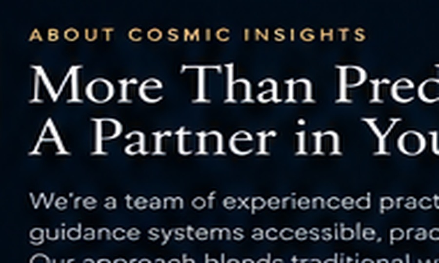
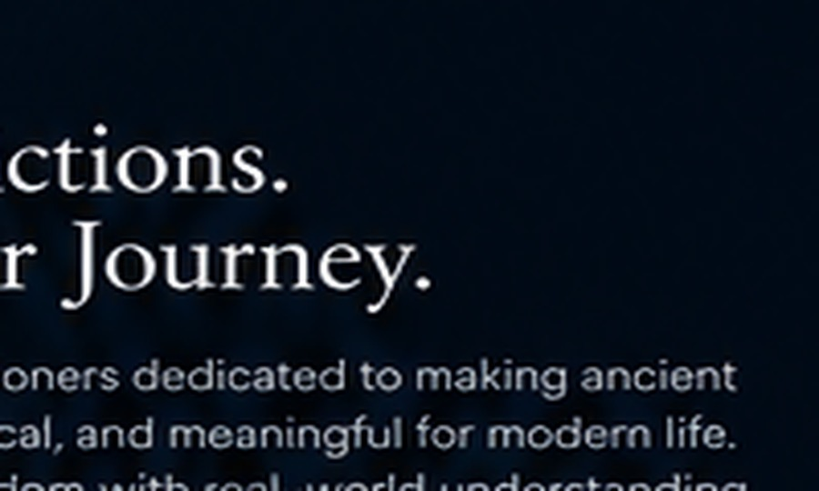
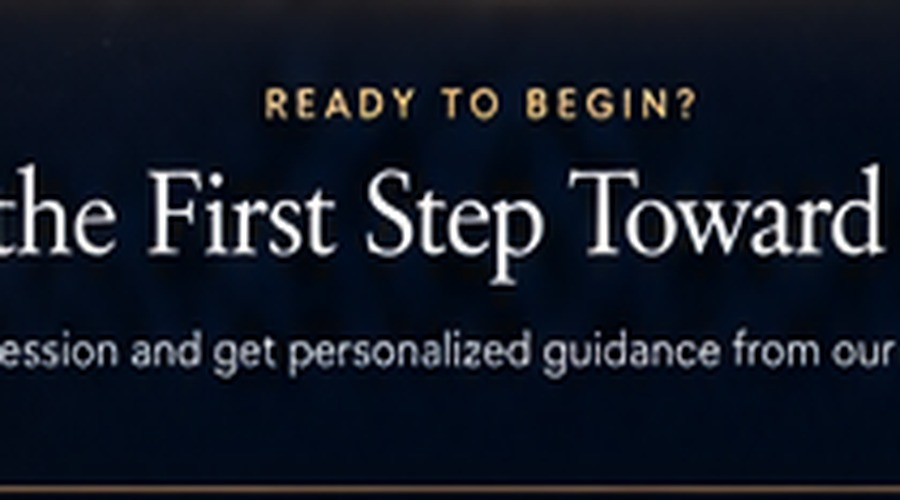

Meet the practitioners behind your consultation.
Each practitioner brings a different specialty and consultation style, helping you choose a thoughtful fit for Vedic astrology, numerology, tarot, relationships, career and personal growth.

Vikram Sharma
Lead Astrologer & Founder
Vikram brings 20+ years of Vedic astrology practice and study. Trained extensively in traditional Vedic astrology while building a practice for ambitious professionals across the US. Specializes in career transitions, business timing, and life direction for executives and entrepreneurs.

Maya Patel
Numerology & Tarot Specialist
Maya's intuitive approach to numerology and tarot helps clients uncover hidden patterns and access their inner wisdom. With 15 years of practice and training in multiple divination systems, she excels at relationship guidance, personal transformation, and spiritual direction for those seeking clarity.
David Chen
Vedic Astrology & Life Coach
David combines astrology with practical life coaching to help clients navigate major transitions. With a background in psychology and 12 years of astrological practice, he's particularly effective with career pivots, relationship questions, and personal transformation during challenging life periods.

Sarah Winters
Relationship Specialist & Tarot Reader
Sarah's warmth and insight make her perfect for relationship questions and spiritual guidance. With 14 years of practice in tarot, numerology, and relationship astrology, she helps couples and individuals understand their dynamics with compassion and clarity.
Personal guidance, from the first question to the final note.
Deep listening
We don't give generic readings. Every session starts with genuine curiosity about your situation and what matters most to you.
Rigorous study
Our practitioners continuously deepen their knowledge. Your guidance is backed by years of training and ongoing education.
Honest clarity
We speak truthfully about what your chart or reading shows. No sugar-coating. No pressure. Just honest, useful insight.
Practical focus
Ancient systems are powerful—but they need to translate into your real life. We make sure your insights are actionable.
Complete confidentiality
Your stories, your details, your decisions—all held in strict confidence. Your privacy is sacred to us.
Ongoing support
Questions after your session? Follow-ups welcome. We're invested in your clarity and transformation.
Choose the practitioner who fits your goals
Not sure which practitioner to book with? Here's how to think about it—or just message us and we'll make a recommendation based on your situation.
Consider your focus
Career or business questions? Vikram's expertise in timing and strategy is unmatched. Relationships? Sarah and Maya both excel here. Personal transformation? David's coaching background is invaluable.
Think about your style
Want structured analysis? Vikram is methodical and precise. Prefer intuitive guidance? Maya's tarot and numerology work beautifully. Like a coaching approach? David blends both.
Try connecting
Your first consultation should feel like a good fit. If it doesn't, we'll help you try another practitioner at no additional cost. The right relationship matters.
Ready to choose your guide?
Choose a practitioner directly, or tell us what you want to explore and we’ll help you find the most appropriate fit.